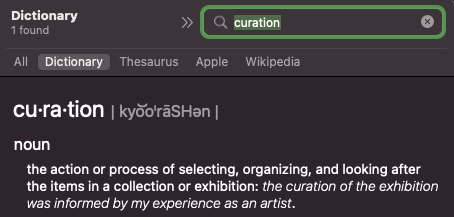

Welcome to the DEPENd Lab’s Data Curation Hub!
This “Data Curation Hub” provides a complete live set of documents for how the UNC DEPENd Lab (PI Dr. Michael N. Hallquist, Ph.D) handles and organizes data and processes relevant to the curation of data for the good of the lab!
Mission Statement
{kind=link}
The goal of the data curation team is to set up and implement a centralized set of procedures for the management of incoming data in the DEPENd Lab. At its inception, our goal was to implement a data curation system that provide ongoing checks on the quality of incoming data for the NeuroMAP and Momentum studies. However, we have since decided to try and generalize this data curation system into a more universal set of guidelines that should apply to any mid-to-large-scale humans subjects research study.
Ultimately, the Data Curation Hub should serve as a reference for:
How data ought to be processed at every stage of its “life”
Data Collection
Data Transfer
Data Validation
Data Preprocessing
Data Quality Control
Data Storage and Backup
How to edit this documentation to reflect the most up-to-date version of the data curation system.
Where to find data at different stages of processing
This data curation team will also oversee implementing these guidelines and organizes relevant information for reporting data quality in regular study meetings.
Ongoing Data Curation Tasks
Currently, the data curation guidelines outlined in this hub are under development. If you are interested in a list of tasks that are currently active, check out this Slite document.
Contents of the Data Curation Hub
Editing this Document
If you are new to this documentation and would like to learn more about how to edit this document, please read through the materials in the “Editing this Document” Tab.
Directory Structure Guidelines
Contains accepted guidelines for how to organize and structure files within a study directory (unitary data collection effort) and project directories (analyzing data or a subset of data collected in a study to derive insights.. typically with the goal of publishing findings)
Storage Plan
Codebooks
NDA Submission Guidelines
Questions
Please direct any questions regarding this Data Curation Hub to Nate Hall (primary), Nidhi Desai, or Michael Hallquist.